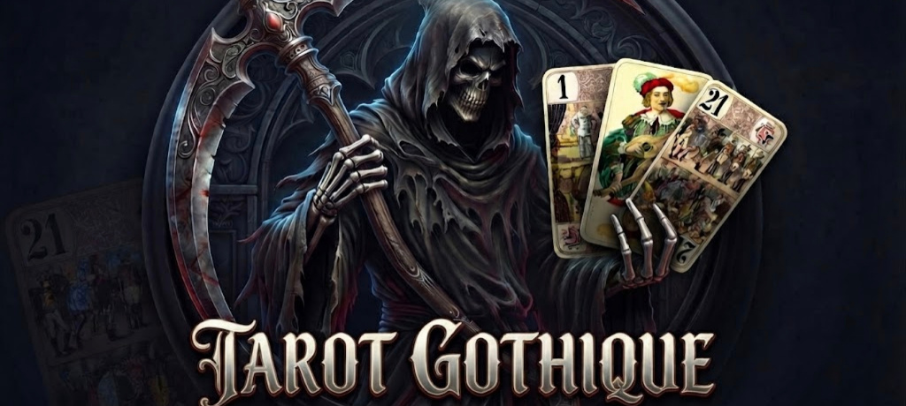
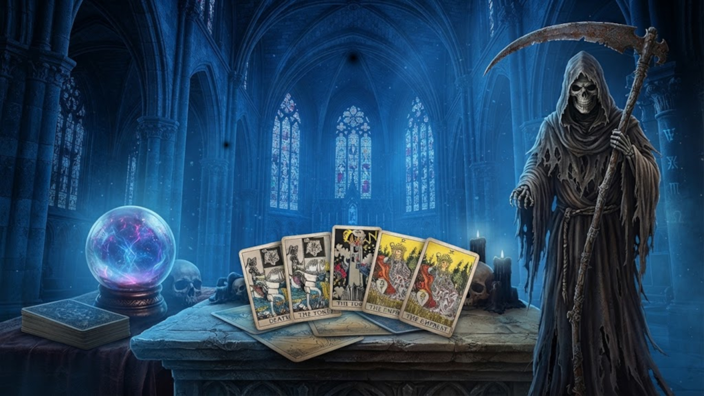
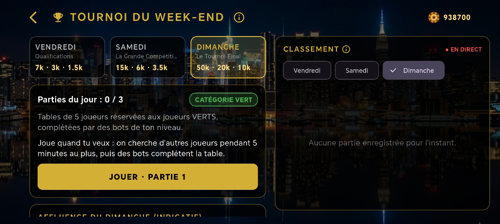
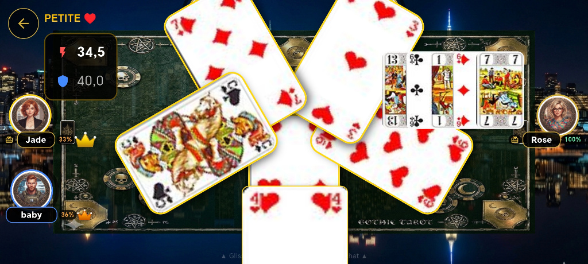
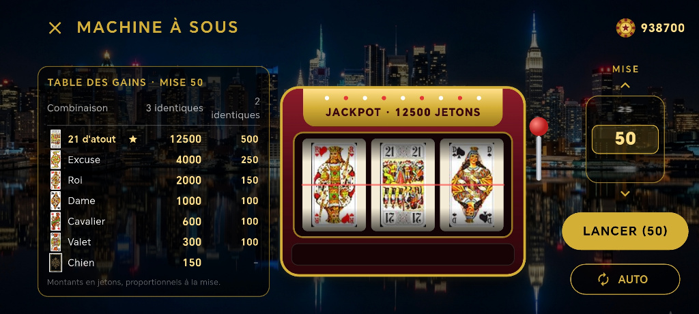

আমাদের ট্যারো খেলায় দৃশ্যের নিমজ্জন
আমাদের খেলার নিয়ম দেখার আগে এই বিনামূল্যের গথিক ট্যারো খেলার দৃশ্যগুলো ঘুরে দেখুন।
এই স্ক্রিনশটগুলো স্মার্টফোন ও ট্যাবলেটে চলা গথিক ট্যারো ২০২৬ Android মোবাইল অ্যাপ থেকে নেওয়া। এগুলো খেলার দৃশ্যজগৎ, পাঁচজনের একটি আসল খেলা আর সপ্তাহান্তের টুর্নামেন্টের স্ক্রিন দেখায়।
আরও দুটি স্ক্রিনশট দেখায় একটি চলমান ট্রিক আর সেই স্লট মেশিন যেখানে আপনি টোকেন বাজি ধরেন। তাসগুলো ৭৮ তাসের প্রচলিত ফরাসি ট্যারো অনুসরণ করে: ২১টি তুরুপ, Excuse আর চোদ্দটি করে তাসের চারটি রং, ১ থেকে রাজা পর্যন্ত। টেবিলে কী ঘটছে বুঝতে পড়ুন ৩, ৪ ও ৫ জনের ট্যারোর নিয়ম।

শিরোনাম স্ক্রিন আবহ তৈরি করে: মৃত্যুদূত তিনটি ট্যারো তাস দেখায়, যার মধ্যে আছে Petit আর তুরুপের ২১, তিনটি Bouts-এর দুটি।

খেলার হলের চিত্র: রঙিন কাচের জানালা, একটি স্ফটিক গোলক আর বেদির ওপর ছড়ানো তাস, খেলার নীল আর সোনালি রঙে।

একটি চলমান দান: পাঁচ খেলোয়াড়ের অবতার টেবিল ঘিরে আছে, আর চুক্তি ও টেকারের পয়েন্ট ওপরে বাঁ দিকে দেখা যায়। খালি আসন AI পূরণ করে, তাই একা থাকলেও পাঁচজনের খেলা শুরু করতে পারেন।

সপ্তাহান্তের টুর্নামেন্ট শুক্রবার থেকে রবিবার চলে, খেলোয়াড়দের লাইভ র্যাঙ্কিংসহ। শুক্রবারের বাছাইপর্ব শেষে প্রত্যেক খেলোয়াড় তার জয়ের হার অনুযায়ী একটি বিভাগ (গ্রিন, ইয়েলো বা রেড) পায়, আর তার টেবিলের বটের স্তর সেই অনুযায়ী বদলায়।

Petite চলাকালীন একটি ট্রিকের কাছ থেকে দেখা দৃশ্য: খেলা তাসগুলো পেন্টাকল-সজ্জিত টেবিলের মাঝখানে, রাতের শহরের আলোর পটভূমিতে, একটির ওপর আরেকটি পড়ে আছে। ওপরে বাঁ দিকে খেলা চুক্তি আর দানের পয়েন্টের হিসাব দেখায়, যা প্রতি ট্রিকের পরে হালনাগাদ হয়।

খেলার ফাঁকে স্লট মেশিন ট্যারো তাসের ছবি আঁকা রিল ঘোরায়। ৫০ টোকেন বাজিতে তুরুপের তিনটি ২১ দেয় ১২,৫০০ টোকেনের জ্যাকপট, আর তিনটি Excuse দেয় ৪,০০০। জয় খেলার টোকেনে দেওয়া হয়।